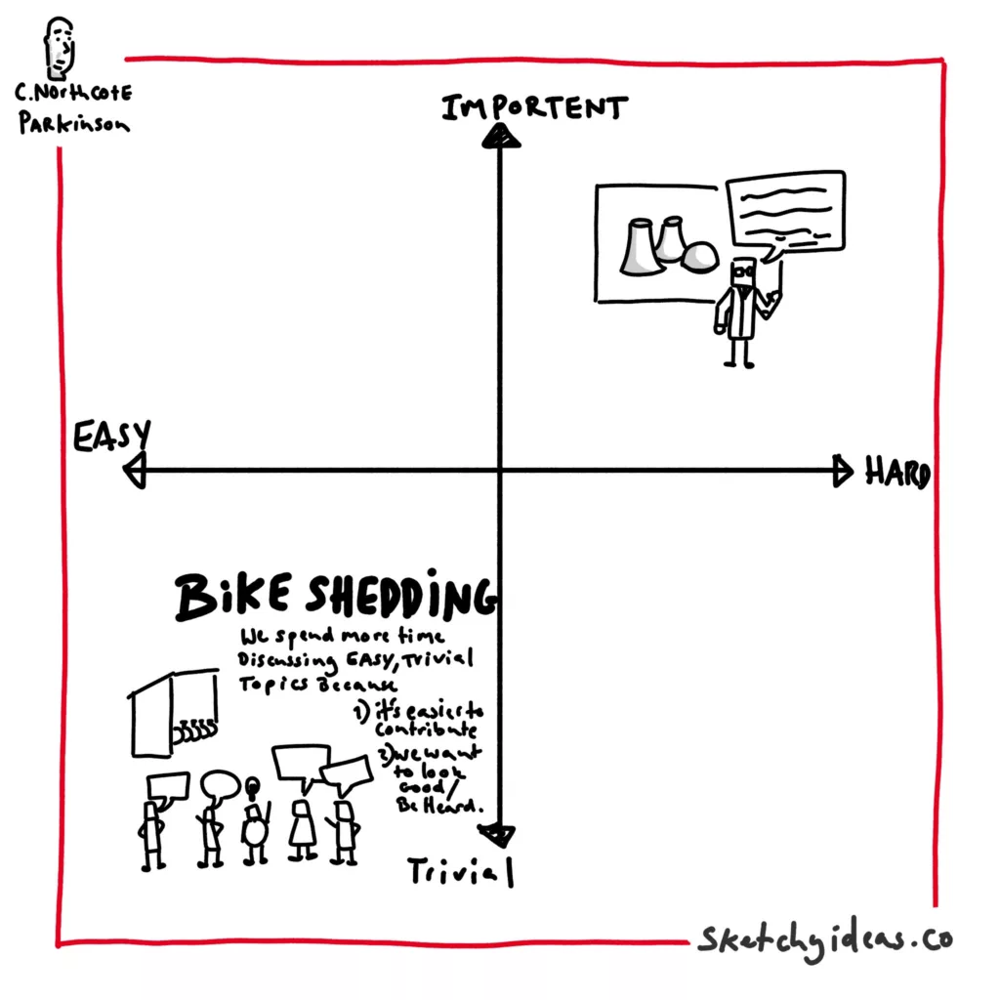
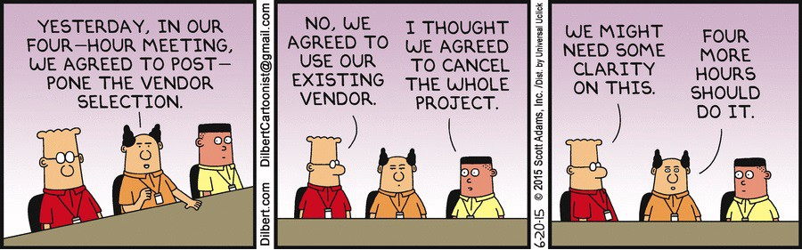

Bike Shedding and the Law of Triviality: Lessons from the Linux Kernel Conflict
In product teams, especially in open-source communities and startups, bike shedding —focusing on trivial, superficial details at the expense of more significant issues—can derail progress. Recent disputes in the Linux kernel community between developers over introducing Rust highlight how the law of triviality can cause friction and stagnation. This post explores the concept of bike shedding, using this real-world example to illustrate its effects, and provides practical advice on how leaders can prevent it.

Table of Contents
- What is Bike Shedding?
- The Law of Triviality in the Linux Kernel Conflict
- Case Study: Rust vs C
- Spotting and Avoiding Bike Shedding in Teams
- Toolkit for Leaders
What is Bike Shedding?
Bike shedding, or Parkinson’s Law of Triviality , refers to a phenomenon where people spend disproportionate amounts of time on trivial details rather than critical issues. The term was coined by C. Northcote Parkinson in 1957, when he observed that committees tasked with approving the construction of a nuclear power plant spent more time discussing trivial matters like the materials for a bike shed than on the reactor's design.
In software engineering, this manifests in endless debates over minor features or aesthetic choices while significant architectural or technical challenges are left unresolved. The implications of bike shedding are wasted time , slowed progress , and team frustration , which can be disastrous, especially for product teams in startups and open-source projects .
The Law of Triviality in the Linux Kernel Conflict
A recent, highly publicized conflict in the Linux kernel community serves as a perfect case study of how bike shedding can wreak havoc. The dispute centers around the introduction of Rust, a modern programming language, into the kernel, which has traditionally been written in C. While the benefits and challenges of using Rust in the kernel are legitimate topics for discussion, the debates have devolved into petty arguments and personal attacks.
Drew DeVault’s blog on this topic highlights the core issue:
"In practice, the Linux community is the wild wild west, and sweeping changes are infamously difficult to achieve consensus on, and this is by far the broadest sweeping change ever proposed for the project. Every subsystem is a private fiefdom, subject to the whims of each one of Linux’s 1,700+ maintainers, almost all of whom have a dog in this race."
The introduction of Rust is a complex task—one part coding and ninety-nine parts political work. But instead of focusing on the critical technical and political challenges, the community has become entangled in irrelevant disputes.
Case Study: Rust vs C
To illustrate how such law of triviality can derail hard work and forward movement there's no better situation that the current chaos happening on LKML (linux kernel mailing list) Issue at hand is a recent exodus of Rust maintainers due to the brewing conflict between C devs and rust devs. Things have come to a flash point in recent times and its best I let you discover the context through some Youtube vides by Primeagen and a few blog posts. We don't want to disucss the Rust vs C issue directly, but use it to highlight how toxic things can become and how it usually lets to suboptimal collaboration and impact.
Primeagen's Commentary
Primeagen’s video provides a commentary on this issue, dissecting how bike shedding has escalated in the Linux kernel discussions. The community is divided between proponents of Rust and die-hard C advocates, with both sides engaging in what Primeagen describes as a "toxic back-and-forth." He highlights that the arguments have become more about personal attacks and less about solving real problems.
[:NOTE] Drew DeVault’s Take
In a blog post titled "Rust in Linux Revisited" , Drew DeVault provides a more grounded analysis of the situation. He criticizes the toxic behavior that has arisen, calling it out in a way that doesn’t fan the flames of the conflict. I love how DeVault writes this in the footnote. Not in the blog body, where it would derail a readers focus from constructive advice into petty gossiping, and yet delivers a stinger to the intended person. bravo!
"Yes, I saw that video, and yes, I expect much better from you in the future, Ted. That was some hostile, toxic bullshit."
This statement exemplifies how a leader can address bad behavior without making the situation worse. The toxic culture in the Linux kernel community, as observed by DeVault, is a classic example of bike shedding spiraling out of control.
Spotting and Avoiding Bike Shedding in Teams
How can you tell if your team is bike shedding? Here are some warning signs:
- Disproportionate focus on minor issues : Are team members spending more time arguing over font choices in the UI than the core functionality of the product?
- Endless debates with no resolution : Discussions drag on with no clear decision, wasting time and energy.
- Personal attacks or toxic behavior : When arguments become personal, it’s a sign that the conversation has drifted away from the real issues.

Bike shedding can happen in various forms across different teams, not just in programming but also between product management, engineering, sales, and leadership. Here are some common cases and strategies for spotting and avoiding it:
Disproportionate Focus on Minor Issues
This can occur when team members fixate on relatively trivial matters, causing bigger issues to be neglected. Here are some real-world examples:
-
Product Management vs. Engineering : Imagine a product manager wants to introduce a small UI change that makes a button a slightly different shade of blue. The engineering team gets caught up in technical discussions about which library to use for the color update, resulting in hours of debate while a critical backend service outage is left unattended. The team has effectively lost focus on the bigger picture : maintaining uptime and customer experience. Leaders need to ask, "Does this decision meaningfully impact the product or user experience?"
-
Sales vs. Product : Sales teams often push for features that might help close a deal with a particular client, leading to one-off development efforts. If the product team caves into these demands every time, they risk derailing their roadmap. Here, disproportionate focus on closing a deal can lead to technical debt, bloated products, and unhappy customers down the line. Instead, sales and product should align on the overall product vision to prevent such misalignment.
-
Leaders vs. Teams : Leaders can sometimes fixate on performance metrics or minute budget details, demanding exhaustive updates from the team about things that don’t materially affect overall business outcomes. This may happen at the expense of tackling systemic issues, such as improving team morale or addressing technical debt. This form of micro-management can be another version of bike shedding, where trust is undermined and innovation stifled .
Endless Debates with No Resolution
Unresolved debates are classic symptoms of bike shedding. Teams can find themselves stuck in a loop of back-and-forth discussions about trivial details, such as how to name a feature or whether to implement something in Python or Go . Here's how leaders can intervene:
- Set timelines for decisions : Introduce deadlines for discussions to ensure they don't stretch on indefinitely. Say, "Let's reach a conclusion on this by the end of the week," and stick to it. The key here is balancing flexibility with accountability .
-
Define the scope of the discussion : If teams are debating endlessly over something insignificant, it’s often because the scope hasn’t been set. As a leader, say something like, "We’re going to focus on solving this problem, not revisiting decisions from last quarter." Setting clear boundaries can reduce friction and help everyone focus.
-
Encourage concise communication : Encourage team members to come prepared with their points and limit the time each person spends talking. If the same points are being repeated over and over, it’s a signal that the decision process needs to move forward.
Personal Attacks or Toxic Behavior
I’ve been guilty of this myself , especially when frustration overtakes logic and composure. It's easy to snap at a colleague or team member during high-stress situations, but that moment of losing your temper stays with you far longer than the person you were arguing with. Even worse, personal attacks create a toxic environment that undermines trust and erodes collaboration .
Leaders must be vigilant about spotting toxic behavior early on. If a team member lashes out in frustration, it's your job to:
- Address the behavior, not the person : Instead of saying, "You were out of line," reframe it as, "We can’t let this discussion devolve into personal criticisms. Let’s refocus on the issue at hand."
-
Model composure : As a leader, your behavior sets the tone for the rest of the team. If you lose your temper, your team will feel it's acceptable to do the same. Keep your emotions in check and offer an apology if you make a mistake. Remember, emotional intelligence is a critical leadership skill .
-
Coach team members on conflict resolution : If people consistently engage in toxic behavior, it may stem from stress or misaligned priorities. Offer to help them manage stress and learn better ways to communicate their frustrations.
Bike shedding isn’t always obvious at first, but by focusing on priority setting, conflict management , and emotional intelligence , leaders can guide their teams away from the trivial and towards meaningful work.
Toolkit for Leaders: Preventing and Resolving Bike Shedding
If you notice bike shedding in your team, here are some strategies to mitigate it:
- Set clear priorities : Clearly define which issues are critical and deserve attention.
- Timebox discussions : Limit the time spent on trivial matters and push for decisions.
- Encourage respectful debate : Promote a culture of constructive criticism and discourage personal attacks.
- Identify the root cause : If bike shedding persists, dig deeper to find out what’s really causing the tension—often, it’s a symptom of underlying issues.
- Reframe the conversation : Bring the focus back to the big picture and remind the team of the overall goals.
Leaders play a critical role in recognizing and addressing bike shedding within their teams. After a bit of thought structuring, I have come up with the following situations which we encounter and an action plan for managing each such situation. I have organized the discussion from immediate problems to preventive actions. Each step emphasizes active leadership and communication to keep teams focused on meaningful work.
Resolving Active Bike Shedding Situations
When a team has already fallen into the trap of bike shedding, leaders need to intervene swiftly and decisively. Here’s how:
-
Refocus on Priorities : When bike shedding is in full swing, remind the team of the bigger picture. Say something like, “I understand this is important, but let’s refocus on our main objective: delivering feature X by the end of the quarter.”
-
Identify Decision-Makers : Bike shedding often happens because no one is clear on who has the authority to make the final call. Assign a decision-maker who is empowered to move the conversation forward. For example, "I’m delegating the decision on this to John. We need a resolution by tomorrow."
-
Set a Hard Stop : Interrupt endless debates by setting a clear deadline for resolution. “We will allow 15 more minutes for discussion, then we’ll vote and move on.” This enforces a sense of urgency and encourages concise communication.
-
Acknowledge, But Move Forward : Acknowledge valid concerns raised during bike shedding, but don’t let them derail progress. "I hear the concerns about implementation details, but we need to get started. We can revisit this later if necessary."
graph TD;
A[Is this topic important? 🤔] -->|Yes| B{Does it have a direct impact on business? 📈};
A -->|No| F[End discussion 🚫];
B -->|Yes| C[Continue discussing 🔄];
B -->|No| D{Is the team spending too much time on this? ⏳};
D -->|Yes| E[Move on to more important tasks 🚀];
D -->|No| C;Stopping Bike Shedding Before It Begins
Leaders should be proactive in spotting early signs of bike shedding and stopping it before it snowballs:
-
Define Scope Early : At the start of any discussion, make the scope clear. “We’re discussing how to roll out the feature, not rethinking its design. Let’s stay focused on the ‘how’.”
-
Set Clear Boundaries for Feedback : Structure discussions to avoid endless back-and-forths. “We’ll gather feedback from everyone, but decisions will ultimately rest with the tech lead.”
-
Encourage Action-Oriented Discussions : Instead of open-ended debates, frame discussions around next steps. Ask questions like, “What actions can we take today to solve this?” This discourages theoretical debates and promotes practical solutions.
-
Enforce ‘Good Enough’ Decisions : Some decisions don’t require perfection. Teach your team the value of making decisions that are “good enough” for now, with the understanding that they can iterate later if needed. “This doesn’t need to be perfect—we’ll revisit it during the next sprint.”
Training Your Team and Mentors to Avoid Bike Shedding
Preventing bike shedding requires ongoing training and mentorship. Leaders should invest in long-term cultural changes that promote focus and accountability:
-
Teach Prioritization Skills : Host workshops or 1:1 sessions on prioritizing high-impact tasks over trivial details. Share frameworks like the Eisenhower Matrix to help team members evaluate what’s important versus what’s urgent.
-
Promote Ownership : Encourage team members to take ownership of their decisions. When people feel accountable for an outcome, they’re less likely to waste time on trivial issues. Empower them to make decisions without needing consensus on every small detail.
-
Mentor for Conflict Resolution : Train mentors to step in when they notice bike shedding happening among their mentees. They should coach their teams to resolve disagreements constructively and move forward instead of dwelling on minor issues.
-
Role-Playing Exercises : Use real-world scenarios where bike shedding occurred in your team and role-play ways to resolve it. This not only provides practice but also normalizes quick decision-making over drawn-out debates.
Running Retrospectives for Situations Where Bike Shedding Happened
After the fact, it’s essential to reflect on why bike shedding was allowed to occur. Running retrospectives on these situations will help teams learn from their mistakes:
-
Acknowledge the Problem : Start by acknowledging that bike shedding happened, and frame the retrospective as a learning opportunity, not a blame game. “We spent too much time debating X during the last sprint. Let’s unpack why that happened.”
-
Ask Key Questions : Structure the retrospective around questions that help uncover the root cause:
- Why did we focus so much on this issue?
- What could we have done differently to resolve this faster?
- How can we prevent this from happening again?
-
Encourage Open Dialogue : Create a safe space for team members to speak candidly about what they noticed. Sometimes, bike shedding can stem from unspoken team dynamics, such as a lack of clear decision-making authority or fear of stepping on someone’s toes.
-
Extract Key Takeaways : Once the discussion has unfolded, help the team distill their learnings into actionable takeaways. “Next time, let’s set a hard stop for discussions and ensure we assign someone to make the final decision.”
-
Set New Norms for Future Discussions : Use the retrospective to establish new rules for decision-making or team discussions. This could be something like, “We’ll now limit open-ended discussions to 20 minutes, then we’ll decide.”
By actively implementing these strategies, leaders can mitigate the risk of bike shedding and create an environment where the team remains focused on meaningful, impactful work.
Footnotes
Primeagen’s commentary on the Rust vs C debate in the Linux kernel
Drew DeVault’s "Rust in Linux Revisited"
Linus is pretty clear with his expection on Rust in FS. He just wants things to be simple to test, crash early and in general be more testable